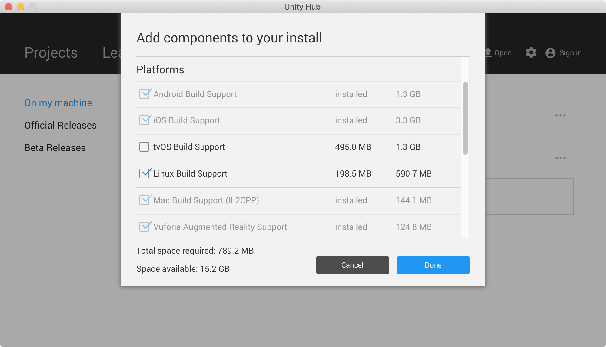

<!DOCTYPE html>
<!--[if IE 8]><html class="no-js lt-ie9" lang="en" > <![endif]-->
<!--[if gt IE 8]><!--> <html class="no-js" lang="en" > <!--<![endif]-->
<head>
  <meta charset="utf-8">
  <meta http-equiv="X-UA-Compatible" content="IE=edge">
  <meta name="viewport" content="width=device-width, initial-scale=1.0">
  <meta name="description" content="None">
  
  <link rel="shortcut icon" href="img/favicon.ico">
  <title>홈 - ML-Agents 강좌</title>
  <link href='https://fonts.googleapis.com/css?family=Lato:400,700|Roboto+Slab:400,700|Inconsolata:400,700' rel='stylesheet' type='text/css'>

  <link rel="stylesheet" href="css/theme.css" type="text/css" />
  <link rel="stylesheet" href="css/theme_extra.css" type="text/css" />
  <link rel="stylesheet" href="//cdnjs.cloudflare.com/ajax/libs/highlight.js/9.12.0/styles/github.min.css">
  
  <script>
    // Current page data
    var mkdocs_page_name = "\ud648";
    var mkdocs_page_input_path = "index.md";
    var mkdocs_page_url = null;
  </script>
  
  <script src="js/jquery-2.1.1.min.js" defer></script>
  <script src="js/modernizr-2.8.3.min.js" defer></script>
  <script src="//cdnjs.cloudflare.com/ajax/libs/highlight.js/9.12.0/highlight.min.js"></script>
  <script>hljs.initHighlightingOnLoad();</script> 
  
</head>

<body class="wy-body-for-nav" role="document">

  <div class="wy-grid-for-nav">

    
    <nav data-toggle="wy-nav-shift" class="wy-nav-side stickynav">
      <div class="wy-side-nav-search">
        <a href="." class="icon icon-home"> ML-Agents 강좌</a>
        <div role="search">
  <form id ="rtd-search-form" class="wy-form" action="./search.html" method="get">
    <input type="text" name="q" placeholder="Search docs" title="Type search term here" />
  </form>
</div>
      </div>

      <div class="wy-menu wy-menu-vertical" data-spy="affix" role="navigation" aria-label="main navigation">
	<ul class="current">
	  
          
            <li class="toctree-l1 current">
		
    <a class="current" href=".">홈</a>
    <ul class="subnav">
            
    <li class="toctree-l2"><a href="#machine-learning">머신러닝(Machine Learning)</a></li>
    
        <ul>
        
            <li><a class="toctree-l3" href="#_1">머신러닝의 정의</a></li>
        
            <li><a class="toctree-l3" href="#_2">머신러닝의 분류</a></li>
        
        </ul>
    

    <li class="toctree-l2"><a href="#-supervised-learning">머신러닝의 기초 - 지도학습(Supervised Learning)</a></li>
    
        <ul>
        
            <li><a class="toctree-l3" href="#_3">지도학습의 분류</a></li>
        
            <li><a class="toctree-l3" href="#linear-regression">선형회귀(Linear Regression)</a></li>
        
        </ul>
    

    <li class="toctree-l2"><a href="#_4">머신러닝 개발환경 구축</a></li>
    
        <ul>
        
            <li><a class="toctree-l3" href="#os">윈도우OS 개발환경 설정</a></li>
        
        </ul>
    

    </ul>
	    </li>
          
            <li class="toctree-l1">
		
    <a class="" href="first_step/">워크북 1</a>
	    </li>
          
        </ul>
      </div>
      &nbsp;
    </nav>

    <section data-toggle="wy-nav-shift" class="wy-nav-content-wrap">

      
      <nav class="wy-nav-top" role="navigation" aria-label="top navigation">
        <i data-toggle="wy-nav-top" class="fa fa-bars"></i>
        <a href=".">ML-Agents 강좌</a>
      </nav>

      
      <div class="wy-nav-content">
        <div class="rst-content">
          <div role="navigation" aria-label="breadcrumbs navigation">
  <ul class="wy-breadcrumbs">
    <li><a href=".">Docs</a> &raquo;</li>
    
      
    
    <li>홈</li>
    <li class="wy-breadcrumbs-aside">
      
    </li>
  </ul>
  <hr/>
</div>
          <div role="main">
            <div class="section">
              
                <h1 id="machine-learning">머신러닝(Machine Learning)</h1>
<p>
<!--  --></p>
<h2 id="_1">머신러닝의 정의</h2>
<h3 id="machine-learning_1">머신러닝(Machine Learning)의 어원</h3>
<blockquote>
<p><strong>"Field of study that gives computers the ability to learn without being explicitly programmed" - 아더 사무엘(Arthur Samuel 1959)</strong></p>
</blockquote>
<h3 id="vs">머신러닝 vs 딥러닝</h3>
<p>머신러닝은 <strong>데이터에서 법칙성을 추출하는 통계적 방법</strong>을 의미한다. 
(참고: 파이선으로 배우는 머신러닝 교과서)</p>
<p>머신러닝의 응용 예는 손글씨 문자 식별, 얼굴 인식, 물체의 식별등에서 찾아볼수 있다. 딥 러닝은 머신러닝의 한 부분으로서 인간 두뇌의 신경세포(시넵스)를 모방한 신경망 모델을 말한다. </p>
<p>머신러닝과 딥 러닝은 모두 인공지능(Artificial Intellgence)의 범위에 포함되는 개념이다.</p>
<p>
<a href="https://dxchange.io/blogs/artificial-intelligence">출처: https://dxchange.io/blogs/artificial-intelligence</a></p>
<h2 id="_2">머신러닝의 분류</h2>
<h3 id="supervised-learning"><strong>지도 학습(Supervised Learning)</strong></h3>
<p>미리 제공한 정보를 바탕으로 학습을 통해 모델을 생성한 후 주어진 문제를 추론(예측)하는 방법이다. 이때 제공된 정보를 트레이닝 데이터(트레이닝 데이터 셋)라 한다. 또한, 제공되는 트레이닝 데이터 셋은 각각 그 데이터가 무엇인지 알려주는 정보를 레이블(Label)이라 한다.</p>
<ul>
<li>트레이닝 데이터 셋(Training Data Set) : 학습을 위한 자료의 집합</li>
<li>레이블(Label) : cat, dog, mug, hat</li>
</ul>
<p>
<a href="http://cs231n.github.io/classification/">출처: http://cs231n.github.io/classification/</a></p>
<p></p>
<p><a href="https://eda-ai-lab.tistory.com/13">참고 : EDA(Exploratory Data Analysis) 탐색적 데이터 분석</a></p>
<h3 id="unsupervised-learning"><strong>비지도 학습(Unsupervised Learning)</strong></h3>
<p>아무런 정보를 제공하지 않고 정답을 추론하는 방법이다. 이 학습법은 많은 수의 데이터를 검사해 각각의 유사성(특징)에 기초해 분류한다. 하지만 레이블이 제공되지 않기 때문에 무엇인지는 인지할 수 없고 분류(Classification)만 한다.</p>
<p></p>
<h3 id="reinforcement-learning"><strong>강화 학습(Reinforcement Learning)</strong></h3>
<p>반복 훈련(시행착오)을 통해 행동에 대한 보상을 기반으로 올바른 해를 구하면 + 보상(Reward)을 주고 틀린 해를 구하면 - 보상을 주는 방법으로 가장 최상의 결과를 찾는 학습법 (예: 알파고(DQN))</p>
<p></p>
<hr />
<h1 id="-supervised-learning">머신러닝의 기초 - 지도학습(Supervised Learning)</h1>
<h2 id="_3">지도학습의 분류</h2>
<table>
<thead>
<tr>
<th>분류</th>
<th>설명</th>
</tr>
</thead>
<tbody>
<tr>
<td>Regression</td>
<td>연속적인 트레이닝 데이터에 기초헤 정답을 추론하는 방법</td>
</tr>
<tr>
<td>Binary classification</td>
<td>2개의 레이블로 이루어진 트레이닝 데이터에 기초해 정답을 추론하는 방법</td>
</tr>
<tr>
<td>Multi-label classification</td>
<td>다수의 레이블로 이루어진 트레이닝 데이터에 기초해 정답을 추론하는 방법</td>
</tr>
</tbody>
</table>
<ul>
<li><strong>Regression</strong> </li>
</ul>
<p>예) 공부한 시간에 따른 시험 점수를 예측</p>
<table>
<thead>
<tr>
<th>시간(X)</th>
<th>점수(Y)</th>
</tr>
</thead>
<tbody>
<tr>
<td>10</td>
<td>90</td>
</tr>
<tr>
<td>9</td>
<td>80</td>
</tr>
<tr>
<td>3</td>
<td>50</td>
</tr>
<tr>
<td>2</td>
<td>30</td>
</tr>
</tbody>
</table>
<ul>
<li><strong>Binary classification</strong></li>
</ul>
<p>예) 공부한 시간에 따라 패스했는지 실패했는지 둘 중 하나를 예측</p>
<table>
<thead>
<tr>
<th>시간(X)</th>
<th>패스여부(Y)</th>
</tr>
</thead>
<tbody>
<tr>
<td>10</td>
<td>P</td>
</tr>
<tr>
<td>9</td>
<td>P</td>
</tr>
<tr>
<td>3</td>
<td>F</td>
</tr>
<tr>
<td>2</td>
<td>F</td>
</tr>
</tbody>
</table>
<ul>
<li><strong>Multi-lable classification</strong> : </li>
</ul>
<p>공부한 시간에 따른 특정 과목의 학점(A, B, C, D, F)을 예측</p>
<table>
<thead>
<tr>
<th>시간(X)</th>
<th>학점(Y)</th>
</tr>
</thead>
<tbody>
<tr>
<td>10</td>
<td>A</td>
</tr>
<tr>
<td>9</td>
<td>B</td>
</tr>
<tr>
<td>3</td>
<td>C</td>
</tr>
<tr>
<td>2</td>
<td>F</td>
</tr>
</tbody>
</table>
<h2 id="linear-regression">선형회귀(Linear Regression)</h2>
<p>선형회귀는 일련의 데이터(X)의 실제값(Y)이 있는 트레이닝 데이터를 기반으로 특정 값에 대한 결괏값을 추론하는 기법이다. 예를 들어 다음 표와 같이 학습한 시간에 따른 시험 점수의 데이터를 활용해 학습한 후 특정 시간(X)을 공부했을 때 몇점의 점수를 받을 수 있을지를 예측할 때 사용하는것을 Regression 알고리즘이다.</p>
<table>
<thead>
<tr>
<th>시간(X)</th>
<th>점수(Y)</th>
</tr>
</thead>
<tbody>
<tr>
<td>10</td>
<td>90</td>
</tr>
<tr>
<td>9</td>
<td>80</td>
</tr>
<tr>
<td>5</td>
<td>60</td>
</tr>
<tr>
<td>3</td>
<td>50</td>
</tr>
<tr>
<td>2</td>
<td>30</td>
</tr>
</tbody>
</table>
<p></p>
<!--
#%%

import tensorflow as tf
import matplotlib.pyplot as plt

x_data = [2,3,5,9,10]       #시간(X)
y_data = [30,50,60,80,90]   #점수(Y)

plt.plot(x_data, y_data, "ro")
plt.xlabel("x=time")
plt.ylabel("y=score")
plt.plot([2,10],[30,90])

plt.show()
-->

<h3 id="hypothesis">가설 (Hypothesis)</h3>
<p><strong>선형회귀</strong>란 실제로 계산된(제시된)점들과 가장 가까운 임의의 <strong>직선</strong>을 찾는 알고리즘을 말한다. 따라서 실측된 데이터에 가장 근접하는 직선을 찾기 위해 먼저 가설를 세운다.</p>
<p></p>
<p>가설은 다음과 같이 일차 방정식으로 표현할 수 있다.</p>
<p></p>
<h3 id="costloss-function">Cost/Loss Function</h3>
<ul>
<li>
<p>예측값과 실제값의 차이</p>
<p></p>
<p>단순한 차이를 계산했지만 음수가 나올 수 있기 때문에 제곱한다.</p>
<p></p>
<p>모든 오차값의 합계를 계산</p>
<p></p>
<p>수학적인 기호로 변환</p>
<p></p>
<p>따라서 Cost/Loss Function은 모든 오차의 합계를 의미한다.</p>
</li>
</ul>
<h1 id="_4">머신러닝 개발환경 구축</h1>
<h3 id="os"><a href="http://www.github.com/indiegamemaker/ml_install">윈도우OS 개발환경 설정</a></h3>
<!--
# 머신러닝 개발환경 구축

- 파이썬(Python) : 파이썬은 3.6 버전을 설치한다. 3.7 버전을 지원하지 않는다.
- numpy 설치


<pre><code class="sh">[zackiller-bash]$ pip3 install numpy
</code></pre>


- matplotlib 설치

<pre><code>[zackiller-bash]$ pip3 install matplotlib
</code></pre>


### 주피터 노트북(Jupyter Notebook)

파이썬의 편집기로 데이터 분석에 편리한 특징을 갖고 있다. 
[다운로드](http://jupyter.org)

### 넘파이(Numpy)

#### arange(a, b, s)
a 와 b-1 사이를 s 간격의 배열값을 반환한다.


<pre><code class="python">import numpy as np
x = np.arange(-2, 2, 0.5)
print(x)

[-2.  -1.5 -1.  -0.5  0.   0.5  1.   1.5]
</code></pre>


#### linspace(a, b, n)

a와 b 사이의 값을 n개의 간격으로 나눈값을 배열로 반환한다.


<pre><code class="python">import numpy as np
x = np.linspace(-2, 2, 10)
print(np.round(x,2))

[-2.   -1.56 -1.11 -0.67 -0.22  0.22  0.67  1.11  1.56  2.  ]
</code></pre>


#### mpl_toolkits.mplot3d

3차원 입체 그래프를 표시하기 위한 라이브러리다. [Mplot3d](https://matplotlib.org/mpl_toolkits/index.html)


<pre><code class="python">from pylab import *

x = linspace(-1.6, 1.6, 10000)
f = lambda x: (sqrt(cos(x)) * cos(200 * x) + sqrt(abs(x)) - 0.7) * \
    pow((4 - x * x), 0.01)
plot(x, list(map(f, x)))
show()
</code></pre>


^2)

-->
              
            </div>
          </div>
          <footer>
  
    <div class="rst-footer-buttons" role="navigation" aria-label="footer navigation">
      
        <a href="first_step/" class="btn btn-neutral float-right" title="워크북 1">Next <span class="icon icon-circle-arrow-right"></span></a>
      
      
    </div>
  

  <hr/>

  <div role="contentinfo">
    <!-- Copyright etc -->
    
  </div>

  Built with <a href="http://www.mkdocs.org">MkDocs</a> using a <a href="https://github.com/snide/sphinx_rtd_theme">theme</a> provided by <a href="https://readthedocs.org">Read the Docs</a>.
</footer>
      
        </div>
      </div>

    </section>

  </div>

  <div class="rst-versions" role="note" style="cursor: pointer">
    <span class="rst-current-version" data-toggle="rst-current-version">
      
      
      
        <span style="margin-left: 15px"><a href="first_step/" style="color: #fcfcfc">Next &raquo;</a></span>
      
    </span>
</div>
    <script>var base_url = '.';</script>
    <script src="js/theme.js" defer></script>
      <script src="search/main.js" defer></script>

</body>
</html>

<!--
MkDocs version : 1.0.4
Build Date UTC : 2020-01-22 03:39:51
-->
